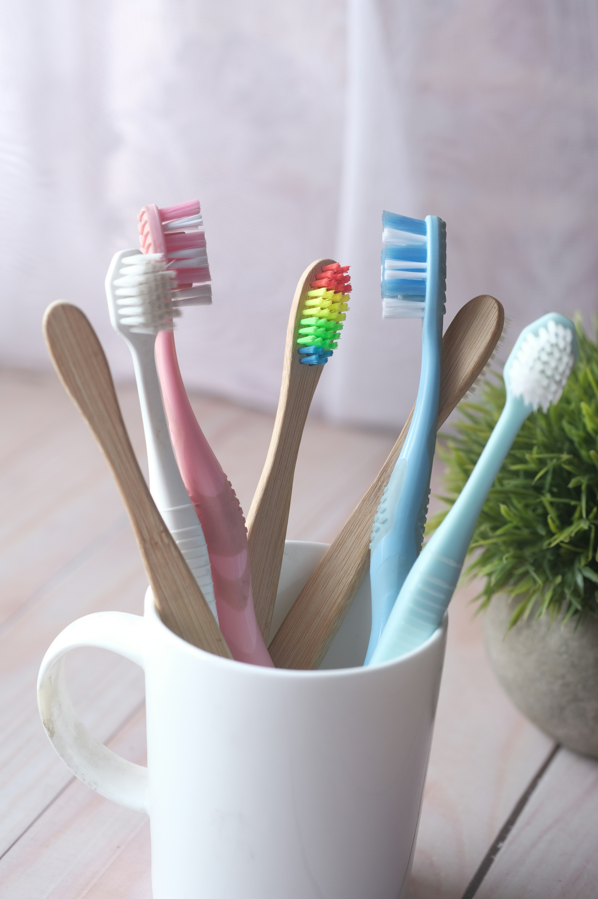
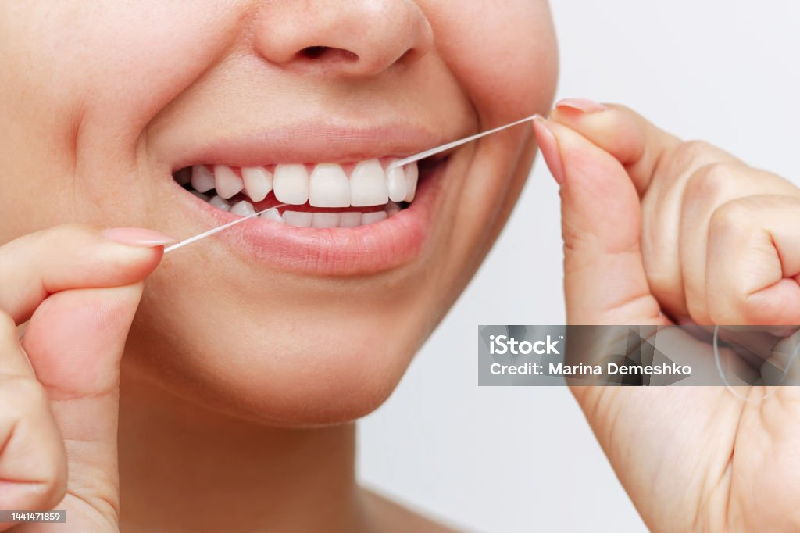

Mouth and dental healthခံတွင်းနှင့် သွားကျန်းမာရေး

The doctor's advice
ဆရာဝန်၏ အကြံပြုချက်
Oral health is not only about attractive teeth — it is directly connected to the health of the whole body. Left unchecked, the bacteria in your mouth can cause gum inflammation, tooth decay and other conditions.
ခံတွင်းကျန်းမာရေးသည် သွားများလှပခြင်းအတွက်သာ မဟုတ်ဘဲ ခန္ဓာကိုယ်တစ်ခုလုံး၏ ကျန်းမာရေးနှင့်လည်း တိုက်ရိုက်ဆက်စပ်နေပါသည်။ ခံတွင်းအတွင်းရှိ ဘက်တီးရီးယားများကို မထိန်းချုပ်နိုင်ပါက သွားဖုံးရောင်ရမ်းခြင်း၊ သွားပိုးစားခြင်းနှင့် အခြားသော ရောဂါများကို ဖြစ်စေနိုင်ပါသည်။
Healthy teeth let you chew properly, which in turn helps digestion. They also let you smile with confidence and speak clearly. Neglect your mouth and you risk decay, bleeding gums, persistent bad breath, and eventually tooth loss.
ကျန်းမာသောသွားများသည် အစားအစာကို ကောင်းစွာဝါးနိုင်စေပြီး အစာချေဖျက်မှုကို ကူညီပေးပါသည်။ ထို့အပြင် ယုံကြည်မှုရှိစွာ ပြုံးနိုင်ခြင်း၊ စကားပြောရာတွင် အသံထွက်မှန်ကန်ခြင်းတို့ကိုလည်း အထောက်အကူပြုပါသည်။ ခံတွင်းကို ဂရုမစိုက်ပါက သွားပိုးစားခြင်း၊ သွားဖုံးသွေးယိုခြင်း၊ ခံတွင်းအနံ့ဆိုးထွက်ခြင်းနှင့် သွားဆုံးရှုံးခြင်းအထိ ဖြစ်နိုင်ပါသည်။
Daily habits worth keeping
နေ့စဉ်ပြုလုပ်သင့်သော အလေ့အကျင့်များ

Brush twice a day
တစ်နေ့ ၂ ကြိမ် သွားတိုက်ပါ
Brush for at least two minutes with fluoride toothpaste — after breakfast and before bed.
နံနက်စာစားပြီးနောက်နှင့် အိပ်ရာမဝင်မီ Fluoride ပါသော သွားတိုက်ဆေးဖြင့် အနည်းဆုံး ၂ မိနစ်ကြာ သွားတိုက်သင့်ပါသည်။

Use dental floss
Dental Floss အသုံးပြုပါ
Floss daily to clean between the teeth, where a brush cannot reach.
သွားတိုက်တံ မရောက်နိုင်သော သွားကြားနေရာများကို သန့်ရှင်းစေရန် Dental Floss ကို နေ့စဉ်အသုံးပြုသင့်ပါသည်။

Choose low-sugar food
သကြားနည်းသော အစားအစာရွေးချယ်ပါ
Cutting back on sweet drinks and sugary snacks protects against tooth decay.
အချိုရည်များနှင့် သကြားများသော မုန့်များကို လျှော့စားခြင်းသည် သွားပိုးစားခြင်းကို ကာကွယ်ပေးပါသည်။
Habits that damage your teeth
သွားကျန်းမာရေးကို ထိခိုက်စေသော အလေ့အကျင့်များ

Sugary food
သကြားများသော အစားအစာများ
Sugar combines with the bacteria in your mouth to form acid, which gradually wears away tooth enamel.
သကြားသည် ခံတွင်းအတွင်းရှိ ဘက်တီးရီးယားများနှင့် ပေါင်းစပ်ကာ အက်စစ်ဖြစ်ပေါ်စေပြီး သွားကြွေလွှာကို တဖြည်းဖြည်း ပျက်စီးစေပါသည်။
Smoking
ဆေးလိပ်သောက်ခြင်း
Smoking yellows the teeth, causes bad breath and sharply raises the risk of gum disease.
ဆေးလိပ်သောက်ခြင်းသည် သွားများဝါလာခြင်း၊ ခံတွင်းနံ့ဆိုးခြင်းနှင့် သွားဖုံးရောဂါများ ဖြစ်ပွားနိုင်ခြေကို သိသိသာသာ မြင့်တက်စေပါသည်။
Sleeping without brushing
သွားမတိုက်ဘဲ အိပ်စက်ခြင်း
Skip brushing at night and the day's food residue becomes a breeding ground for bacteria.
ညအိပ်ရာမဝင်မီ သွားမတိုက်ပါက တစ်နေ့တာ စားသောက်ထားသော အစားအစာအကြွင်းအကျန်များသည် ဘက်တီးရီးယားပေါက်ဖွားရာနေရာ ဖြစ်လာနိုင်ပါသည်။
When to see a dentist
သွားဆရာဝန်ထံ ဘယ်အချိန်သွားသင့်သလဲ
Most people only go once a tooth hurts. A check-up every six months is what dentists actually recommend. Go sooner if you notice any of these —
လူအများစုသည် သွားနာမှသာ သွားဆရာဝန်ထံ သွားလေ့ရှိကြပါသည်။ သို့သော် ၆ လတစ်ကြိမ် ပုံမှန်စစ်ဆေးရန် အကြံပြုထားပါသည်။ အောက်ပါလက္ခဏာများ ဖြစ်ပေါ်လာပါက စောစီးစွာ ပြသပါ —
- Bleeding gums
- Toothache, or sensitivity to hot and cold
- Bad breath that will not go away
- A tooth that has become loose
- သွားဖုံးသွေးယိုခြင်း
- သွားနာခြင်း သို့မဟုတ် အအေး/အပူ ထိလျှင် ကျင်ခြင်း
- ခံတွင်းနံ့ဆိုးခြင်း မပျောက်ခြင်း
- သွားယိုင်လာခြင်း
Frequently asked questionsမေးလေ့ရှိသော မေးခွန်းများ
Every three months, or sooner if the bristles are worn.
၃ လတစ်ကြိမ် သို့မဟုတ် အမွေးများပျက်စီးလာပါက အသစ်လဲလှယ်သင့်ပါသည်။
Clean both teeth and tongue thoroughly, drink enough water, and use a mouthwash.
သွားနှင့် လျှာကို သန့်ရှင်းစွာ တိုက်ပေးခြင်း၊ ရေလုံလောက်စွာသောက်ခြင်းနှင့် ခံတွင်းသန့်စင်ဆေးရည် အသုံးပြုခြင်းတို့က အထောက်အကူပြုပါသည်။
The doctor's advice
ဆရာဝန်၏ အကြံပြုချက်
Dental health is not just about a beautiful smile — it is tied to the health of your whole body.
သွားကျန်းမာရေးသည် လှပသောအပြုံးအတွက်သာ မဟုတ်ဘဲ ခန္ဓာကိုယ်ကျန်းမာရေးတစ်ခုလုံးနှင့် ဆက်စပ်နေပါသည်။
Make three things habits: brushing twice a day, flossing, and a regular check-up with your dentist.
တစ်နေ့လျှင် နှစ်ကြိမ် သွားတိုက်ခြင်း၊ Dental Floss အသုံးပြုခြင်းနှင့် သွားဆရာဝန်ထံ ပုံမှန်စစ်ဆေးခြင်းတို့ကို အလေ့အကျင့်ကောင်းအဖြစ် မွေးမြူသင့်ပါသည်။
In summary
နိဂုံးချုပ်
A healthy mouth and healthy teeth give you more than a good smile — they give you a healthier life.
ကျန်းမာသော ခံတွင်းနှင့် သွားများသည် လှပသောအပြုံးကိုသာမက ကျန်းမာသောဘဝကိုလည်း ပိုင်ဆိုင်စေပါသည်။
Follow good daily cleaning habits and see your dentist regularly, and most dental and gum disease can be prevented before it starts.
နေ့စဉ် မှန်ကန်သော ခံတွင်းသန့်ရှင်းရေး အလေ့အကျင့်များကို လိုက်နာပြီး သွားဆရာဝန်ထံ ပုံမှန်စစ်ဆေးခြင်းဖြင့် သွားနှင့် ခံတွင်းရောဂါများကို ကြိုတင်ကာကွယ်နိုင်ပါသည်။
Last reviewed: August 2026 · Reviewed by the MedCare medical editorial team.
နောက်ဆုံးပြန်လည်သုံးသပ်သည့်ရက် — ဩဂုတ် ၂၀၂၆ · MedCare ဆေးပညာ တည်းဖြတ်အဖွဲ့မှ စိစစ်ပြီး။
All articlesဆောင်းပါးအားလုံး